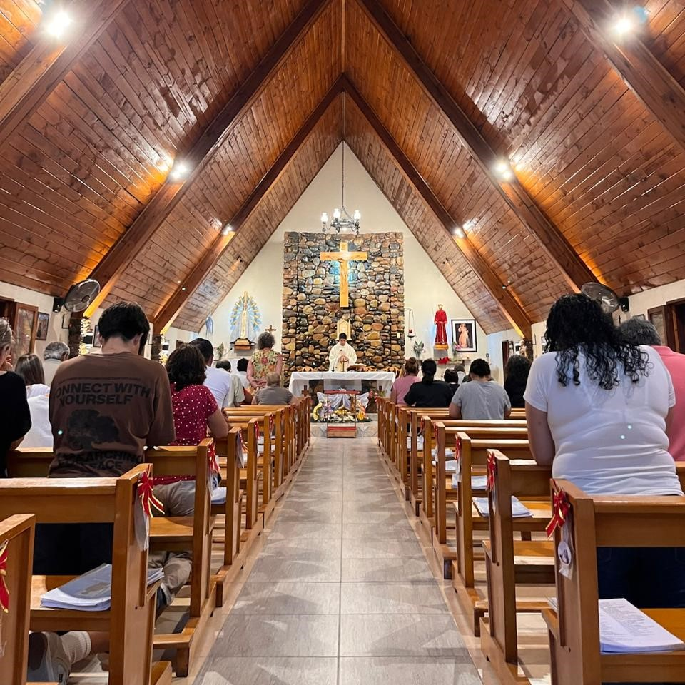
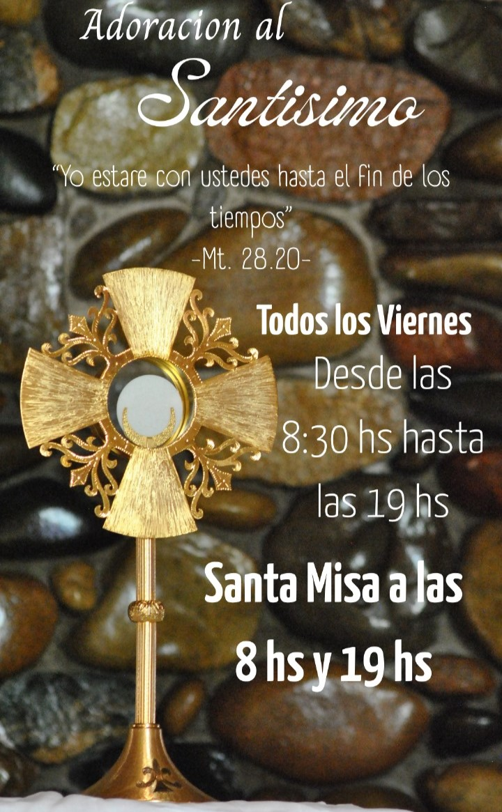

Horarios de Misa
Domingos
Una parroquia al servicio de la comunidad
En Salto de las Rosas, San Rafael, Mendoza, existe un lugar de encuentro con Jesús: La Parroquia Jesús Nazareno. Fundada en el año 1970, camina junto a su pueblo con fe viva y corazón abierto.
Desde nuestra fundación caminamos junto a las familias de la comunidad en los momentos más importantes de la vida: el bautismo, la primera comunión, el matrimonio y el acompañamiento en los momentos difíciles.
Contamos con grupos activos: Scouts, Acción Católica, Cursillos de Cristiandad, Movimiento Familiar Cristiano, Servidores del Evangelio de la Misericordia de Dios, Cáritas, Liturgia, catequesis de niños, jóvenes y adultos.
Visítanos

Rosario de la Aurora
¡Venimos a rezar juntos a María y a comenzar el día con Dios!
Nuestros Grupos
Scouts
Formación integral de valores humanos y cristianos en la naturaleza y la fe.
Consultar en la parroquia
Aspirantes
Para chicos hasta 11 años.
Sábados · 16:30 a 18:00 hs
Equipo de Liturgia
Lectores, acólitos, coro y ministros extraordinarios de la comunión.
Servicio en las celebraciones
Cursillos de Cristiandad
Movimiento de renovación espiritual para adultos.
Consultar en la parroquia
Movimiento Familiar Cristiano
Acompañamiento y formación para matrimonios y familias.
Consultar en la parroquia
Servidores del Evangelio
De la Misericordia de Dios. Oración, alabanza y servicio misionero.
Consultar en la parroquia
Cáritas
Servicio caritativo a los más necesitados de nuestra comunidad.
Consultar en la parroquia
Catequesis de Niños
Primera comunión. Inscripciones abiertas.
Consultar horarios
Catequesis de Jóvenes y Adultos
Confirmación y formación en la fe para mayores de 12 años.
Consultar horarios
Adoración al Santísimo
La Adoración al Santísimo Sacramento es un momento de encuentro profundo con Jesús presente en la Eucaristía. En silencio y oración, la comunidad se reúne ante el Señor para adorarlo, agradecerle y pedir por sus necesidades.
"Yo estaré con ustedes hasta el fin de los tiempos." — Mt. 28, 20

Los Sacramentos
Bautismo
El inicio de la vida cristiana. Informes en la secretaría.
Confirmación
Preparación anual. Inscripciones abiertas.
Eucaristía
El corazón de nuestra fe, celebrada cada día
Reconciliación
Perdón y misericordia de Dios. Confesiones antes de cada Misa.
Matrimonio
Curso prematrimonial. Consultar con anticipación.
Unción de los Enfermos
Llamar a la parroquia para visita a domicilio.
Sacramento del Bautismo
Todos los domingos a las 11 hs
Deben anotarse los días previos
REQUISITOS:
- D.N.I. del niño y padres.
- De padrino/s:
- D.N.I.
- Certificado de Confirmación.
- Debe ser mayor de 16 años.
- Debe estar casado por Iglesia o ser soltero.
- Puede bautizarse sin padrinos.
Sacramento del Matrimonio
REQUISITOS:
- Certificado de Bautismo "para casamiento".
- Cursillo prematrimonial.
- Presentarse meses antes para iniciar expediente matrimonial.
Acción Católica
Cada sábado, la parroquia se llena de vida con los grupos de Acción Católica. Un espacio único de encuentro, amistad, reflexión y servicio pensado para que jóvenes de todas las edades compartan su fe y dejen huella.
¿Tenés más de 19 años? También hay un grupo exclusivo para vos, ideal para conectar con otros jóvenes en tu misma sintonía.
✨¡Sumate a la comunidad! Para conocer los horarios y sumarte, escribile al Padre Fernando. ¡Te esperamos!✨

Donaciones
Tu colaboración nos ayuda a mantener nuestro templo, apoyar las obras de Cáritas y continuar con las actividades pastorales y la catequesis.
¡Que Dios bendiga tu generosidad!
Contacto
La secretaría parroquial atiende de lunes a viernes y los sábados por la mañana. ¡Te esperamos!
Secretaria
martes a viernes: 9 a 12 hs y 16 a 18:30 hs. Lunes no se atiende.
¡Te esperamos!